Checking out and building Felix with NetBeans
In this how-to we describe the process of checking out and building Felix from source using the NetBeans IDE.
Required Software:
- NetBeans 6.1 - You can get NetBeans from the NetBeans web site.
- Subversion command-line client - NetBeans uses the Subversion command-line client for its Subversion integration. You can get the Subversion command-line client from Tigris or if you are working on a Unix machine it will most likely be available in your OS's package repository.
- NetBeans Maven plugin - You can install this from within NetBeans by selecting "Tools->Plugins" menu item, then choosing the Maven plugin from the "Available Plugins" tab and pressing the "Install" button on the bottom of the dialog. For a good introduction on what you can do with this plugin see the Maven Best Practices page on the NetBeans wiki.
- Maven - You will also need to locally install Maven to complete this how-to. You can download Maven from the Maven web site.

Why do we need maven?
The NetBeans Maven plugin comes pre-packaged with Maven so why do we need a locally installed copy of Maven? The version of Maven that comes prepackaged with NetBeans is a 2.1-SNAPSHOT which currently has issues building Felix so we need a locally installed copy of the current release of Maven so we can use that instead.
Checking out Felix
1) From NetBeans' main menu select "Versioning->Subversion->Checkout" as shown in Figure 1.
Figure 1: NetBeans Subversion Menu
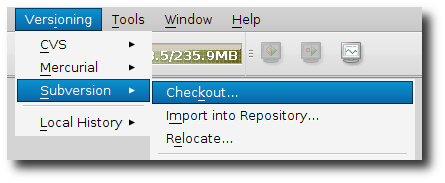
2) Now we need to fill in the checkout dialog box. For this dialog box all we need to do is fill in the "Repository URL" (See below for what this should be). Once you have set the Repository URL you can press the "Next" button. See Figure 2 for what the dialog should look like when you are done.
Figure 2: NetBeans checkout dialog box
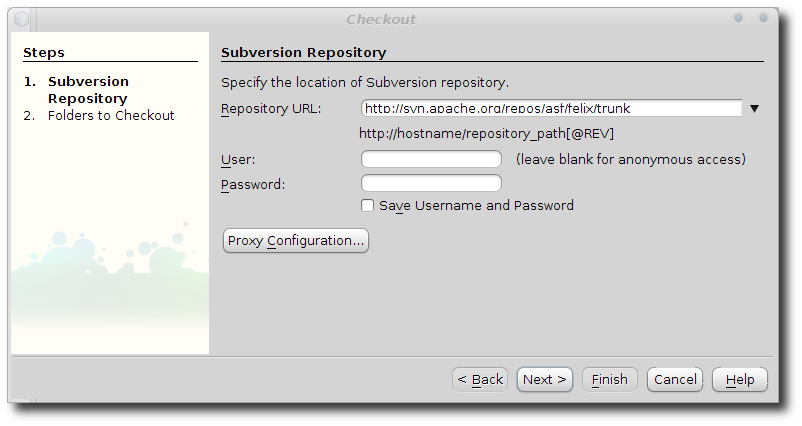
3) In the next panel of the checkout dialog box we need to set where we want to put the source code as well as some parameters that will get passed to the subversion client.
- Repository Folder(s) - This should be set for you, but if it is not it should be "felix/trunk"
- Repository Revision - Leave this one blank. NOTE: If you want to check out a particular version of Felix you can put the revision number here and that revision will be checked out. For our purposes here we want to get the latest revision.
- Skip "trunk" check box - Check this. This option means that the source code will be checked out into the root of the folder/directory that we supply.
- Local Folder - This is where the source code will be checked out locally. You can press the browse button to select a directory. NOTE: If you need to create a sub-directory pick the parent then in the edit box add it to the path. It will be created for you during the check out.
- Scan for NetBeans Projects after checkout check box - You can either check or uncheck this box. Either way NetBeans will not open any of the projects because there are approximately 183 projects in the Felix source tree. Later we will pick the specific project we need for compiling Felix.
Once you have filled in the second panel of the checkout dialog press the "Finish" button at the bottom of the dialog. See Figure 3 for how the dialog should look.
Figure 3: NetBeans checkout dialog box (panel 2)
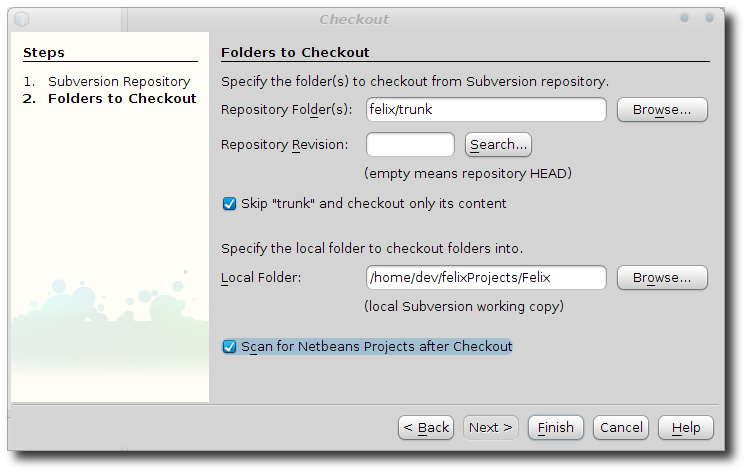
4) It may take a while for the checkout to complete. If you want to see what is happening, take a look at the output window at the bottom of the NetBeans window. If you don't see it select "Window->Output->Output" to make it display. You should see something like what is shown in Figure 4.
Figure 4: NetBeans output window
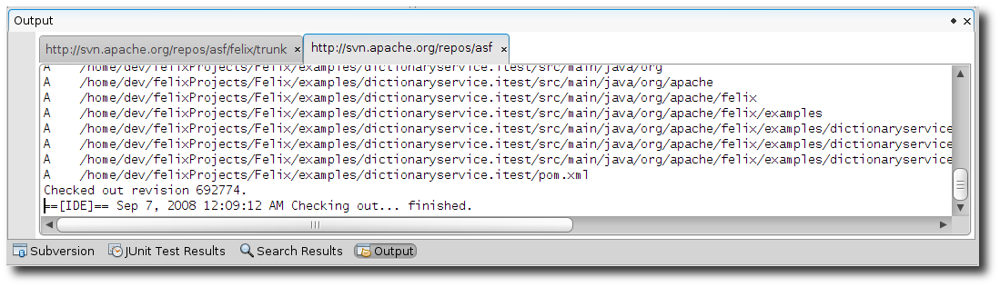
5) If you left the "Scan for NetBeans Projects after checkout" check box checked you will see the dialog in Figure 5 when Subversion finishes checking out Felix. For now just press the "Cancel" button.
Figure 5: NetBeans open project dialog
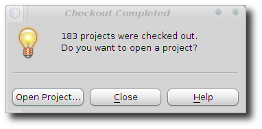
6) This concludes the section on checking out the Felix source code.
Building Felix
In this section we will be going over how to build Felix from within NetBeans.
1) Setup external Maven in NetBeans
Before we can build Felix, we need to set up NetBeans so that it can use our external Maven instead of the one bundled with the Maven plugin. You do this in the NetBeans options dialog ("Tools->Options"). Select the "Miscellaneous" icon at the top of the dialog. Then select the "Maven 2" tab. What we want to do here is tell NetBeans where we installed Maven. You can press the "Browse" button to browse to the directory where you installed Maven. You can leave the rest of the options as they are. See Figure 6 for how this dialog looks and how to set it up.
Figure 6: NetBeans Maven option dialog
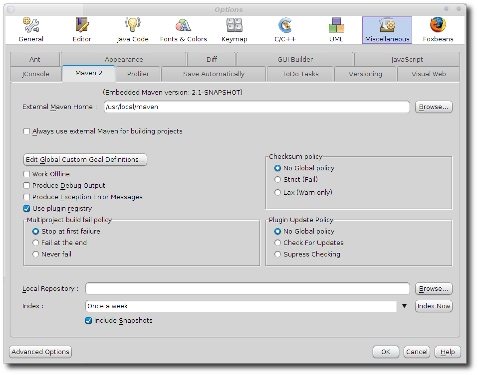
2) Open the Felix project folder
Now we need to open the Felix build project folder. This will be the "pom" project. It is located in the directory where you checked out the source code. When you locate it select the project and press the Open Project button. See Figure 7 for how this looks.
Figure 7: NetBeans Open Project dialog
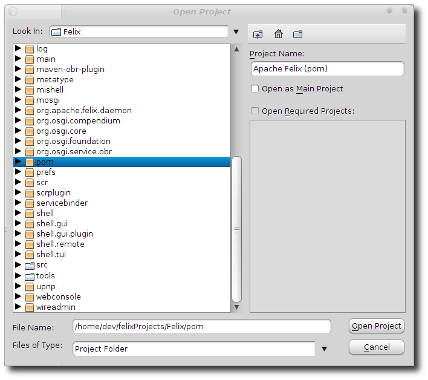
When the project is opened your "Projects" pane should look something like Figure 8.
Figure8 : NetBeans Project pane
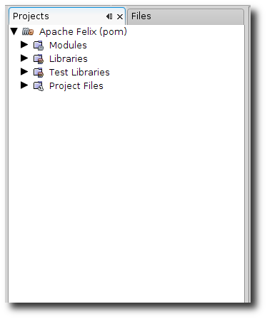
3) Configure the project
We now need to change one aspect of the project configuration. So right click on the project and select the "Properties" menu item, then select the "Actions" category. What we need to do here is check the "Use external Maven for build execution" checkbox. Once you have done this you can press the "OK" Button. See Figure 9 for how this should look.
Figure 9: NetBeans Project properties dialog
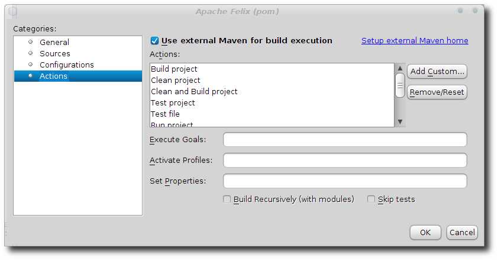
4) Select a build profile
Felix is built in two phases. These two phases are controlled by Maven profiles so we want to set the profile that we want to build. You do this by right clicking on the project then select "Profiles->packaging-plugins" to select the profile, see Figure 10.
Figure 10: NetBeans Project profiles
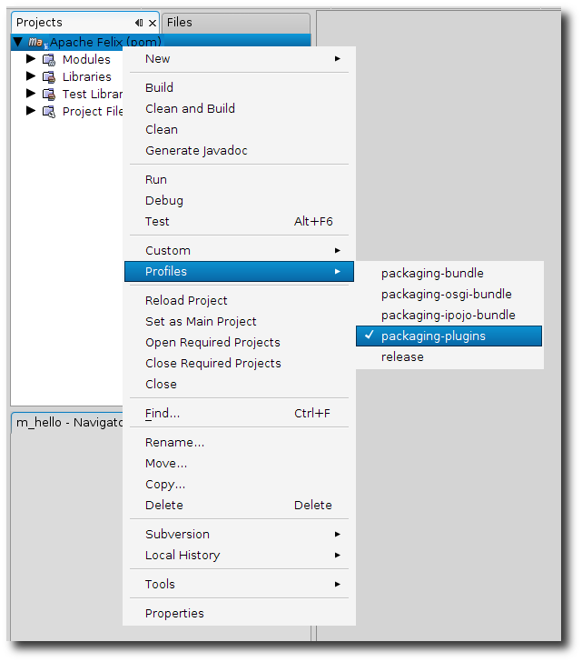
5) Build Felix plugins
Now that we have selected the correct profile all we have to do is build it. Right click on the project and select the "Clean and Build" menu item. You should see something like Figure 11 when the build is complete. NOTE: If you have not done this before it may take a little while, since Maven needs to download a bunch of plugins.
Figure 11: Plugins build output
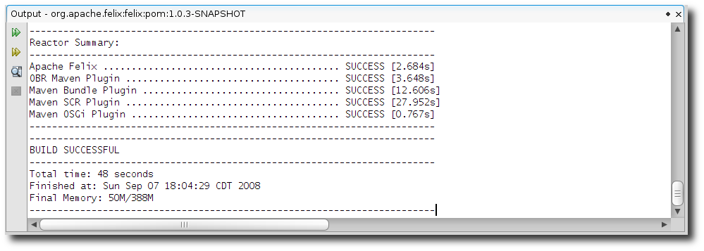
6) Build Felix bundle
Now that we have built the plugins it is time to build the Felix bundle. Like in step 4, we right click on the project and select "Profiles->packaging-plugins" (to unselect it), then do it again but this time select "Profiles->packaging-bundle". Once you have done that you can "Clean and Build" the project. See Figure 12 for what you should see in the output window when the build completes.
| Did you get a OutOfMemoryError during the bundle build? Sometimes, the Felix bundle build throws this error. Just try to build it again and it should go away after you do it a couple of times as there will be less to build each time. Or if you want you can increase the memory available to Maven. I have found that setting the environment variable MAVEN_OPTS to "-Xmx1024m -Xms512m" allows me to build Felix completely the first time though. It should be noted that if you change this you may need to shut down and restart NetBeans before Maven will see this environment variable as Maven inherits its environment variables from NetBeans and NetBeans will not get the new or updated variable until you restart it. |
Figure 12: Bundle build output
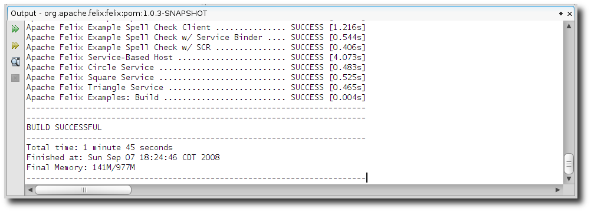
Conclusion
If every thing went as expected then you should have a built and ready to run Felix installation in the "main" directory under the directory where you checked out Felix. You can now run Felix from the command line by changing to that directory and running this command:
java -jar bin/felix.jar
Other documentation
You may also want to read:
- Integrating Felix with NetBeans - A how-to style document that shows how to run Felix under NetBeans.
- Felix usage - Go to the Felix usage page to learn how to launch the Felix framework.
How to get help
If you need any help or have questions about this document you can ask on the Felix Users Mailing list. See Felix Mailing lists for how to subscribe to the list.